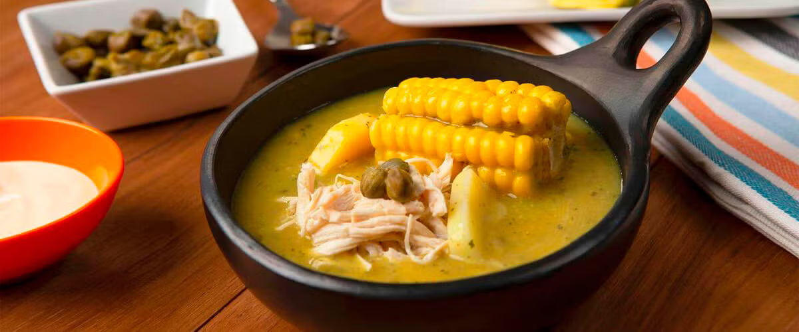

¿Por qué la comida típica nos conecta con nuestras raíces?
En esta publicación exploraremos cómo la gastronomía conecta generaciones y comunidades, y por qué es vital preservarla como patrimonio cultural.
En esta publicación exploraremos cómo la gastronomía conecta generaciones y comunidades, y por qué es vital preservarla como patrimonio cultural.